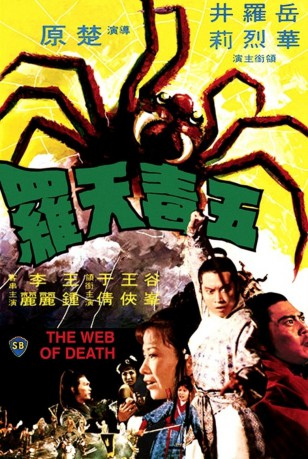

#7242 Im Todesnetz der gelben Spinne
 
 IMDB-Wertung: 6.2 / 10
IMDB-Wertung: 6.2 / 10  Metascore: 0
Metascore: 0 
Die beiden Geheimbunde der "Snakes" und der "Scorpions" befinden sich auf der ewigen Suche nach dem "Netz des Todes" (Web of Death) dieses soll ihnen ungeahnte Kräfte verleihen. Das Netzt befindet sich in einem alten Kloster und wird von Wächtern geschüzt damit diese Waffe nicht in die Hände der falschen fällt. Wer wird das "Five Poison Web" zuerst finden ....
Jahr: 1976
Dauer: 87 Minuten
FSK: 16
Land: Hong-Kong Studio: M.I.B.Tonspuren:
Untertitel:
Auflösung: 1080p (1920x808) Größe: 5591 MB
Genre: Action, Drama, Fantasy, Liebe, Mystery
Regisseur: Yuen Chor
Drehbuch: Kuang Ni
Soundtrack:
Darsteller:
Datei: X:\HD-Eastern-Classic(A-M)\Im Todesnetz der gelben Spinne (1976, FSK16, 1920x808).mkv seit 09.10.2017
Festplatte: HD Eastern+Western
 Es gibt insgesamt 63 Filme in der Gruppe 'HD-Eastern-Classic(A-M)'
Es gibt insgesamt 63 Filme in der Gruppe 'HD-Eastern-Classic(A-M)'